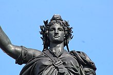

| Inicio |
Lugares turisticos |
Historia |
Cultura |
| La historia de Francia |
| Fecha |
Evento |
Descripción |
Imagenes |
| 843 d.C. |
Tratado de Verdún |
División del Imperio Carolingio en tres partes, marcando el inicio de Francia como nación. |
 |
| 987 d.C. |
Coronación de Hugo Capeto |
Inicio de la dinastía Capeta, que gobernó Francia durante siglos.
| |
| 1789 |
Revolución Francesa |
El pueblo derroca la monarquía, establece la Primera República y surge el lema "Libertad, Igualdad, Fraternidad".
| |
| 1793 |
Ejecución de Luis XVI |
Fin de la monarquía absoluta, el rey es ejecutado por la guillotina.
| |
| 1804-1814 |
Imperio Napoleonico |
Napoleón Bonaparte conquista gran parte de Europa, crea un imperio, pero es derrotado en 1814.
| |
| 1815 |
Batalla de Waterloo |
Derrota definitiva de Napoleón Bonaparte y su exilio a la isla de Santa Elena.
| |
| 1914-1918 |
WWI |
Francia lucha contra las Potencias Centrales, sufriendo grandes bajas y siendo clave en la victoria aliada.
| _2.jpg) |
| 1940 |
Ocupación nazi de Francia |
Francia es invadida y ocupada por la Alemania nazi durante la Segunda Guerra Mundial.
|
|
| 1944 |
Liberación de Francia |
El ejército aliado libera Francia del control nazi durante la Segunda Guerra Mundial. |
|
| 1958 |
Creación de la Quinta República |
Establecimiento de la Quinta República bajo Charles de Gaulle, consolidando el poder ejecutivo.
|  |
| Todos los derechos reservados 2025 |